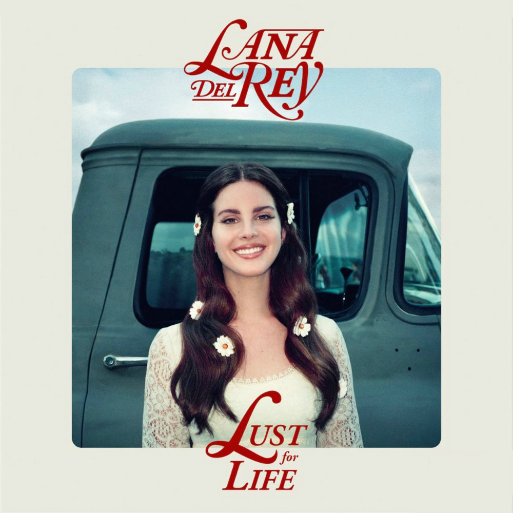

1. Joanne - Lady Gaga
Info
- Released: 21 / 10 / 2016
- Genre: soft rock, dance pop
- Length: 47:23
- Featuring: Florence Welch
playlist
- Diamond Heart
- A-YO
- Joanne
- John Wayne
- Dancin' In Circles
- Perfect Illustion
- Million Reasons
- Sinner's Prayer
- Come To Mama
- Hey Girl
- Angel Down
- Grigio Girls
- Just Another Day
- Angel down (work tape)

2. Lust For Life - Lana Del Rey
Info
- Released: 21 / 07 / 2017
- Genre: Alternative
- Length: 71:56
- Featuring: The Weeknd, ASAP Rocky, Playboi Carti, Stevie Nicks, Sean Ono Lennon
playlist
- Love
- Lust For Life
- 13 Beaches
- Cherry
- White Mustang
- Summer Bummer
- Groupie Love
- In My Feelings
- Coachella - Woodstock In My Mind
- God Bless America
- When The World Was At War We Kept Dancing
- Beautifull People With Beautifull Problems
- Tomorrow Never Came
- Heroin
- Change
- Get Free
3. Miley Cyrus And Her Dead Petz - Miley Cyrus
Info
- Released: 30 / 08 / 2015
- Genre: Experimental, Pop
- Length: 92:06
- Featuring: Sarah Barthel, Big Sean, Ariel Pink,
playlist
- Dooo It!
- Karen Don't Be Sad
- The Floyd Song (Sunrise)
- Something About Space Dude
- Space Boots
- F*****g F****d Up
- BB Talk
- Fweaky
- Bang Me Box
- Milky Milky Milky
- Slab Of Butter (Scorpion)
- I'm So Drunk
- I Forgive Yiew
- I Get So Scared
- Lighter
- Tangerine
- Tiger Dreams
- Evil Is But A Shadow
- Cyrus Skies
- 1 Sun
- Miley Tibetan Bowlzzz
- Pablow The Blowfish
- Twinkle Song